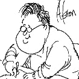
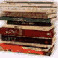

|  |  |  |
||
| News | West staff | Reference | Software | My Brain and I |
Howard nobbles free enterprise |
Editorial: March 26, 1998 |
| WEST AUSTRALIANS will undoubtedly be attracted by the
cinema-like pictures and CD quality sound that digital television promises. But
this glitzy lure disguises the problems of the Howard Government's The FTAs have been given an oligopoly over the delivery of digital The Nine, Seven and Ten networks have, in effect, received many hundreds of millions, if not billions, of dollars of value which rightly should have gone to the public purse from an auction of the vacant air space. The FTAs receive an unfair boost through the decision to protect them from competition. Under the new digital regulatory regime, new TV competitors will be banned until at least 2008. The Howard Government's decision to freeze cross-media ownership laws until 2008 locks out newspapers from breaking into the game of the protected FTAs. It is an unconscionable act of discrimination against viable competitors with legitimate aspirations to enter into the new media. Likewise, workable controls preventing the FTAs from taking over the This is an anti-competitive free kick for the FTAs and nobbles aspiring The digital largesse improves the TV networks' ability to pitch for new A network's hotlinks to other services will have significantly more traffic than other interactive service providers struggling to be noticed among the sea of competitors' sites on the Internet. Already the networks are well positioned to use this alluring bundle of Newspapers, which deal with issues in significantly more detail than the They amount to an ambush and a grave threat to our media future. |
@ccess staff: Sue Yeap, Hal Crawford and David Watts (DW).
All articles Copyright: © West Australian Newspapers